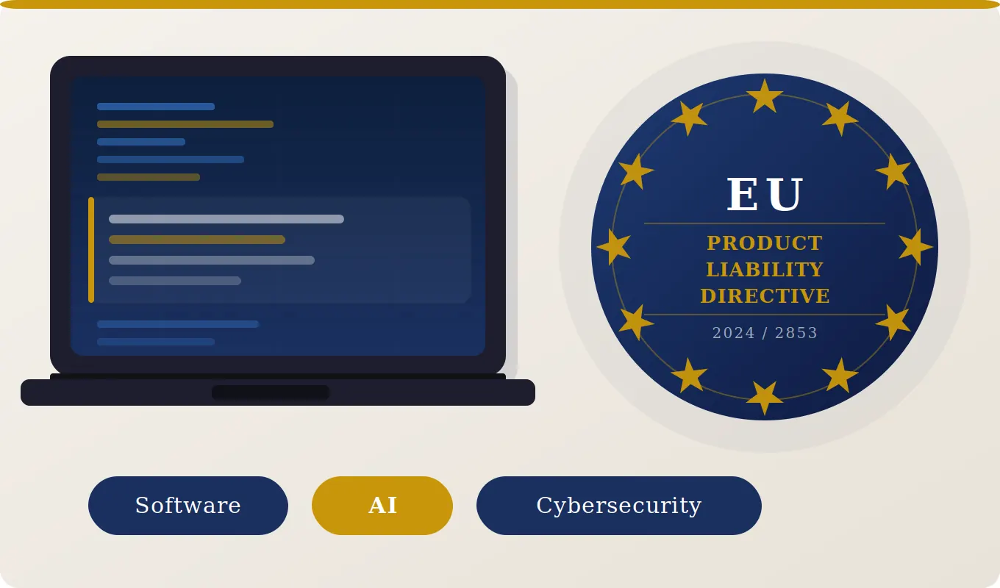

On 18 November 2024, Directive (EU) 2024/2853 on liability for defective products was published in the Official Journal of the European Union, repealing Council Directive 85/374/EEC and bringing to a close nearly four decades of largely unchanged product liability law in Europe. Member States must transpose it by 9 December 2026.
The new Directive constitutes one of the most significant developments in the field of European liability law, as it seeks to adapt a legislative framework dating back to 1985 to the demands of the digital economy, artificial intelligence, and modern technological products. The 1985 framework was built for a world of tangible goods; it was never designed to grapple with software, algorithms, cloud services, or artificial intelligence. As these technologies have come to define how modern products function, the gap between the law and commercial reality has widened considerably. The new Directive closes that gap, modernising the rules for the digital age while preserving a high level of consumer protection and providing the legal certainty that businesses operating in the European market need.
Expanding the Definition of a Product
One of the most significant innovations introduced by the Directive concerns the expansion of the concept of a “product”. For the first time, software is expressly recognised as a product for the purposes of product liability rules, encompassing operating systems, applications, firmware, and artificial intelligence systems. This removes longstanding uncertainty regarding the treatment of damage caused by digital components, reflecting the understanding that a software defect may be just as harmful as a manufacturing defect in a physical product and should therefore be subject to the same liability regime.
The inclusion of AI systems is particularly significant. Unlike conventional products, AI systems learn, adapt, and modify their behaviour autonomously, meaning the cause of damage may lie not in a physical defect but in an erroneous algorithmic decision. The Directive addresses this directly, ensuring that the same liability principles apply regardless of the technology underpinning the product.
The Directive also addresses products that continue to evolve after being placed on the market through software updates or connected digital services, adopting a more dynamic conception of liability. Notably, cybersecurity vulnerabilities may be taken into account when assessing whether a product is defective.
Expanding the Range of Liable Parties
The Directive broadens the range of economic operators who may be held liable for damage caused by defective products. In addition to manufacturers, liability may extend to importers, authorised representatives and, where neither is available, fulfilment service providers where the manufacturer is established outside the European Union. Under certain circumstances, online platforms may also incur liability.
These provisions are intended to ensure that injured parties are able to pursue an identifiable economic operator established within the European Union, even where the manufacturer itself is located outside the EU.
Expanding the Scope of Compensable Damage
The Directive broadens the categories of recoverable damage to include, for the first time:
- the loss or corruption of digital data not used exclusively for professional purposes; and
- medically recognised psychological harm, even where no accompanying physical injury has occurred.
This represents a substantial development, reflecting the reality that defective products may now cause digital and psychological harm alongside traditional forms of damage.
Strengthening Consumer Protection: Presumptions and Disclosure
The complexity of modern technological products can make it difficult for an injured consumer to establish liability. The Directive addresses this by introducing:
- A rebuttable presumption of defectiveness, applying in particular where a producer fails to comply with a court order to disclose relevant evidence.
- A rebuttable presumption of causation, where defectiveness is established and the associated risk corresponds to the type of damage suffered.
- Judicial disclosure powers: Courts may order producers to disclose relevant technical documents and data; non-compliance may be drawn upon adversely.
The Development Risk Defence and AI Systems
The Directive retains the development risk defence, by which a manufacturer may escape liability if it proves the defect could not have been discovered given the state of scientific and technical knowledge at the time of placing the product on the market. However, defects arising or worsening as a result of a post-market software update or modification fall outside the scope of this defence — a significant limitation for producers of remotely updated technological products.
Limitation Periods
The Directive maintains the existing three-year limitation period, together with the ten-year long-stop period for bringing product liability claims. However, it introduces an important exception by extending the long-stop period to twenty-five years in cases involving latent personal injuries that become apparent only after a considerable period of time.
This amendment reflects the reality that certain injuries may not manifest themselves until many years after exposure to a defective product and ensures that injured persons are not deprived of an effective remedy solely because the damage becomes apparent at a later stage.
What Businesses Should Do Now
As Member States prepare to transpose the Directive into national law by 9 December 2026, businesses should begin assessing the impact of the new regime on their operations. In particular, they should consider:
- reviewing product liability policies to ensure they adequately address products incorporating software and artificial intelligence;
- strengthening cybersecurity risk management, given that cybersecurity vulnerabilities may be relevant when assessing product defectiveness;
- reviewing contractual arrangements with importers, authorised representatives, fulfilment service providers and other participants in the supply chain to ensure that liability is appropriately allocated; and
- reassessing data governance and data protection practices, recognising that the loss or corruption of digital data may now give rise to compensable claims.
Conclusion
Directive (EU) 2024/2853 marks a significant evolution of the European product liability regime, bringing it into line with the realities of the digital economy. By extending the definition of a product to include software, expanding the categories of potentially liable economic operators and compensable damage, and introducing new evidential mechanisms, the Directive establishes a modern framework better suited to emerging technologies and increasingly complex products.
Its transposition into Cypriot law by 9 December 2026 is expected to have important implications for manufacturers, importers, distributors and other economic operators active within the European market. Businesses should therefore begin reviewing their compliance strategies and contractual arrangements now in order to prepare for the new legal landscape.